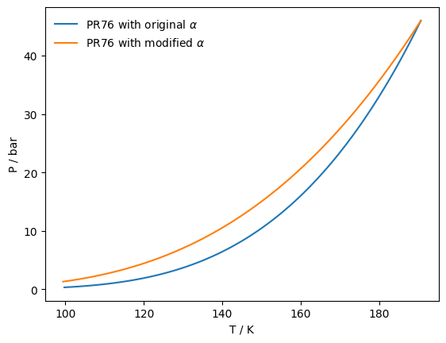
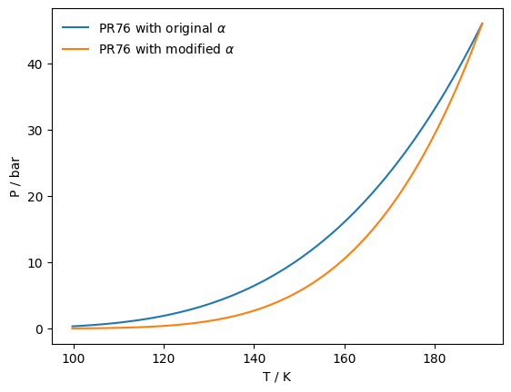
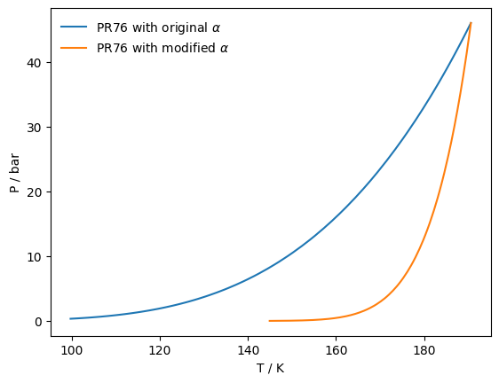

Alpha functions
The attractive parameter of every CEOS has a dependance with temperature, given by an \(\alpha(T)\) function. Normally every CEOS has a default \(\alpha\) function, but the yaeos API allows you to modify them. This can be done with the .set_alpha method. This method replaces the default alpha function with one defined by the user. This definition is done with different objects already defined inside yaeos.
The available alpha functions are:
AlphaSoave
AlphaRKPR
AlphaMathiasCopeman
AlphaSoave
The \(\alpha\) function defined by Soave for the SoaveRedlichKwong EoS:
[39]:
import yaeos
import matplotlib.pyplot as plt
import numpy as np
tcs = np.array([190.6, 369.8]) # critical temperatures [K]
pcs = np.array([45.99, 42.48]) # critical pressures [bar]
w = np.array([0.0115, 0.0866]) # acentric factors [-]
model_pr76 = yaeos.PengRobinson76(tcs, pcs, w)
psat_pr76 = model_pr76.pure_saturation_pressures(1)
# Define the alpha soave with a value of k=0 for the first component and
# 10.3 for the second one. Just as example values.
k = [00.000, 10.3]
alphasoave = yaeos.AlphaSoave(k=k)
model_pr76.set_alpha(alphasoave)
psat_pr76_modified = model_pr76.pure_saturation_pressures(1)
plt.plot(psat_pr76["T"], psat_pr76["P"], label=r"PR76 with original $\alpha$")
plt.plot(psat_pr76_modified["T"], psat_pr76_modified["P"], label=r"PR76 with modified $\alpha$");
plt.legend(frameon=False)
plt.xlabel("T / K")
plt.ylabel("P / bar");

Alpha RKPR
The RKPR EoS uses a different \(\alpha\) function. This function changes the functionality with Temperature. Being inversely proportional to the reduced temperature \(T_r\), with an exponent \(k\)
[38]:
import yaeos
import matplotlib.pyplot as plt
import numpy as np
k = [3.000, 10.3]
alpharkpr = yaeos.AlphaRKPR(k=k)
tcs = np.array([190.6, 369.8]) # critical temperatures [K]
pcs = np.array([45.99, 42.48]) # critical pressures [bar]
w = np.array([0.0115, 0.0866]) # acentric factors [-]
model_pr76 = yaeos.PengRobinson76(tcs, pcs, w)
psat_pr76 = model_pr76.pure_saturation_pressures(1)
model_pr76.set_alpha(alpharkpr)
psat_pr76_modified = model_pr76.pure_saturation_pressures(1)
plt.plot(psat_pr76["T"], psat_pr76["P"], label=r"PR76 with original $\alpha$")
plt.plot(psat_pr76_modified["T"], psat_pr76_modified["P"], label=r"PR76 with modified $\alpha$");
plt.legend(frameon=False)
plt.xlabel("T / K")
plt.ylabel("P / bar");

Alpha Mathias-Copeman
The alpha function defined by Mathias and Copeman. This function consists in a piecewise function, either for temperatures above or below the critical point. Above the critical point, the same functionality as the Soave alpha is used. But, for temperatures below the critical point, a third order polinomial is used.
[40]:
import yaeos
import matplotlib.pyplot as plt
import numpy as np
c1 = [5.000, 0.3]
c2 = [0.000, 0.3]
c3 = [0.9, 0.3]
alphamc = yaeos.AlphaMathiasCopeman(c1, c2, c3)
tcs = np.array([190.6, 369.8]) # critical temperatures [K]
pcs = np.array([45.99, 42.48]) # critical pressures [bar]
w = np.array([0.0115, 0.0866]) # acentric factors [-]
model_pr76 = yaeos.PengRobinson76(tcs, pcs, w)
psat_pr76 = model_pr76.pure_saturation_pressures(1)
model_pr76.set_alpha(alphamc)
psat_pr76_modified = model_pr76.pure_saturation_pressures(1)
plt.plot(psat_pr76["T"], psat_pr76["P"], label=r"PR76 with original $\alpha$")
plt.plot(psat_pr76_modified["T"], psat_pr76_modified["P"], label=r"PR76 with modified $\alpha$");
plt.legend(frameon=False)
plt.xlabel("T / K")
plt.ylabel("P / bar");
